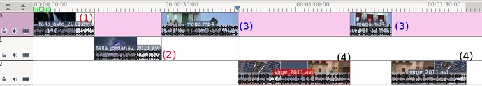
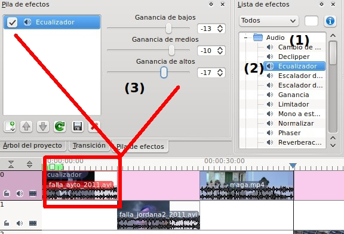

Autoevaluación
PASOS PREVIOS
Para poder realizar esta práctica requerimos diponer de un fichero de video. En caso de no disponer de ninguno, entra en el apartado de recursos del tema y puedes utilizar cualesquiera de los videos que te ofrecemos.
Te recomendamos utilizar videos propios o libres para evitar problemas con la Legislación Vigente.
Crea una carpeta denominada actividades dentro de tu carpeta personal (ejemplo: lliurex). En esta carpeta guardarás todas las actividades del tema de video.
ACTIVIDAD A REALIZAR EN CLASE
1. Genera un proyecto nuevo denominado Actividad4_kdenlive.
2. Dicho proyecto debe ser un perfil de HD Ready (720 entrelazado y con 25 fotogramas por segundo tal como muestra la imagen)

3. Importa varios clips de video con sonido de fondo. Cada uno de los clips no deben superar el minuto de duración y la totalidad de la línea de tiempo ha de ser inferior a 3 minutos. Corta parte de los clips y los ubicas en las tres pistas de forma alterna.

Observa nuestra línea de tiempo que consta de 4 videos. Dos de ellos han sido divididos (3 y 4) en dos partes.
4. Aplica efectos de sonido. Descubre por tu cuenta las características y finalidades de los mismos.Ejemplo: utilizamos el ecualizador (2) del grupo de efectos de Audio (1).

8. Exporta como fichero de HD PAL de 1080 y 25 fps con el nombre de Actividad4_video.
Jo.R.C.A. 2004 - 2011

Edición de Audio y Video con Software Libre by José Ramón Cerdeira Alonso is licensed under a Creative Commons Reconocimiento-No comercial-Compartir bajo la misma licencia 3.0 España License